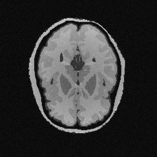
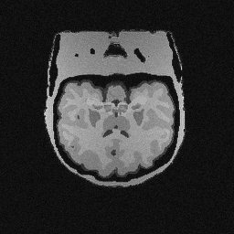
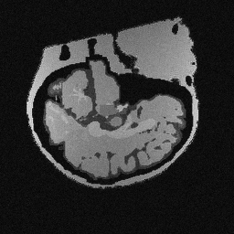
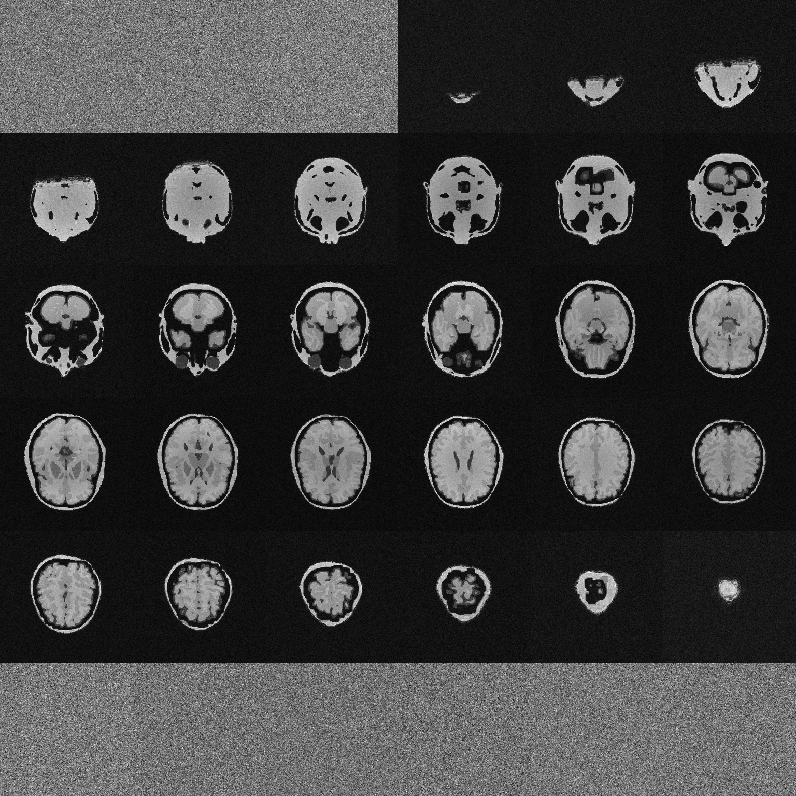

Brain MRI — Samuel331 Ortega866
DOB: 1921-04-14 | Study date: 1994-04-19 | Modality: MR (Head) | Volume: 256×256×256
Orthogonal Mid-Slices

Axial (frame 128/256)

Coronal (row 128/256)

Sagittal (col 128/256)
6×6 Axial Mosaic (all 36 evenly-spaced frames)

Frames 0–255, every 7th slice